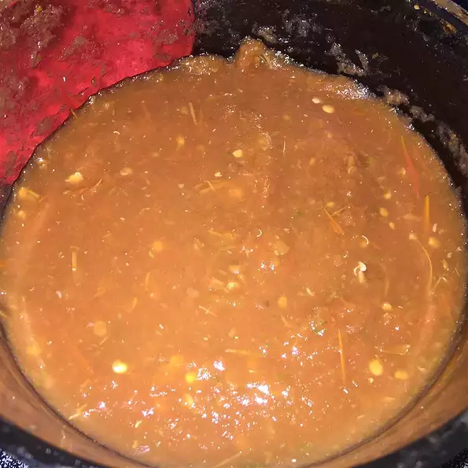

Spicy, flavorful salsa that will be the center of the snack table. Serve as a dip with chips or as a topping on tacos. Enjoy!
Stem tomatoes and peppers. Transfer to a pot of boiling water. Cook, uncovered, for 15 minutes. Carefully drain water and set aside.
Roughly chop onion. Transfer to a blender with boiled vegetables, cilantro, and salt. Blend until smooth or to desired texture.
Per Serving: 6 calories; protein 0.3g; carbohydrates 1.3g; fat 0.1g; sodium 1.4mg.